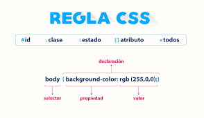

CSS es un lenguaje que sirve para describir la presentación, el estilo de los documentos HTML.
CSS sirve para darle un estilo diferente a la página, así no es tan aburrida. Y el programa que utilizamos para interpretar el CSS es nuestro propio navegador.
Regla CSS se le llamada a la estructura completa. Un selector y declaration.
La anatomía se divide en 4 partes. El selector, la declaración, las propiedades y el valor de las propiedades
Un selector es un elemento de HTML. Esta selecciona el o los elementos para dar el estilo.
ID: Este tipo de selector es igual al de clase, aunque lo aplicaremos a un único elemento HTML de nuestra página. Esto se debe a que el atributo ID de HTML identifica a un elemento HTML por medio de un nombre.
CLASS: Los selectores de clases comienzan siempre por un . (punto). Los clientes web (navegadores) identifican este punto y lo distinguen del resto de los selectores.
Universal: Nos permite aplicar estilos a todos los elementos HTML de un documento y se indica mediante el *
Etiquetas: Aplicamos propiedades CSS a una etiqueta. La misma se identifica sin utilizar el signo mayor y menor.
Con este selector seleccionamos un elemento que está dentro de otro del mismo tipo. Estos seectores siempre están formados por dos o más selectores separados entre si. El último selector será el elemento HTML al que se le aplicará las propiedades de CSS.
Las formas de vincular es mediante, utilizando la etiqueta Style, utilizando el atributo Style y con un archivo externo.
Hacer clic en View All Designs
Elegir dos diseños y abrirlo en pestañas distintas
En el primer diseño presiona ctrl+u (esta combinación de teclas permite ver el código HTML en el navegador)
En el segundo diseño presiona ctrl+u (esta combinación de teclas permite ver el código HTML en el navegador)
Escribir la URL de los dos diseños seleccionados y responder: las etiquetas dentro de body ¿son iguales? ¿Qué es lo distinto? ¿Qué contribuye al cambio de diseño?
Abrir los dos archivos CSS de los diseños seleccionados. ¿Son los mismos?
En líneas generales, el mismo HTML ¿puede tener diferentes diseños?
view-source:http://www.csszengarden.com/221/
view-source:http://www.csszengarden.com/214/
Todas las etiquetas son iguales en todos los casos, lo único distinto es el estilo implementado en cada página. Pero tienen las mismas etiquetas.
Si, el mismo HTML puede tener distintos diseños.
propiedad. | Descripción. | Valores posibles
Color | Define el color del texto.| color: orange, color: #009900, color: rgb(34 12 64 / 0.6);
background-color | Define el color de fondo de un elemento | background-color: rgb(153, 102, 153); background-color: #777799.
font-size | Define el tamaño de la fuente del texto. | { font-size: xx-large }, { font-size: 250% }, { font-size: 16px; }.
font-weight | Define el grosor de la fuente del texto (por ejemplo, si se trata de texto en negrita o normal). |font-weight: 100; font-weight: 700; font-weight: bold.
font-style | Define el estilo de la fuente del texto (por ejemplo, si es cursiva o normal).| font-weight: bold; font-weight: 400; font-weight: initial.
font-family | Define el tipo de letra a utilizar para el texto.|font-family: serif; font-family: sans-serif; font-family: monospace; font-family: cursive;
text-align | Define la alineación horizontal del texto (izquierda, centro o derecha)|text-align: start; text-align: -moz-center; text-align: revert.
text-decoration | Define la decoración del texto (por ejemplo, si está subrayado o tachado).| text-decoration: underline red; text-decoration: underline wavy red.
text-transform | Define la transformación del texto (por ejemplo, en mayúsculas o minúsculas).|text-transform: capitalize; text-transform: uppercase; text-transform: lowercase; .
letter-spacing | Define el espacio entre letras.| letter-spacing: normal; letter-spacing: 0.3em; letter-spacing: 3px; letter-spacing: initial.
line-height | Define la altura de línea del texto.|line-height: normal; line-height: 34%; line-height: 3.5; line-height: inherit.
Este es un párrafo de ejemplo. Haz clic aquí para obtener más información.
Utiliza un selector descendente para aplicar estilos al enlace dentro del párrafo. ¿Qué se modifica? p a { color: #333; text-decoration: none; } Utiliza las propiedades de CSS que se han presentado, como font-weight. Crea un ejemplo para cada una de ellas utilizando una clase para cada una. derás a utilizar el selectores por ID para aplicar estilos a elementos únicos de la página, como una imagen de fondo o un menú desplegable: Agrega un ID fondo a tu cuerpo de la página para aplicar un fondo específico a toda la página. En el HTML body id="fondo" En el CSS #fondo { background-color: #aa3b3b; /* modificar el color a elección */ }